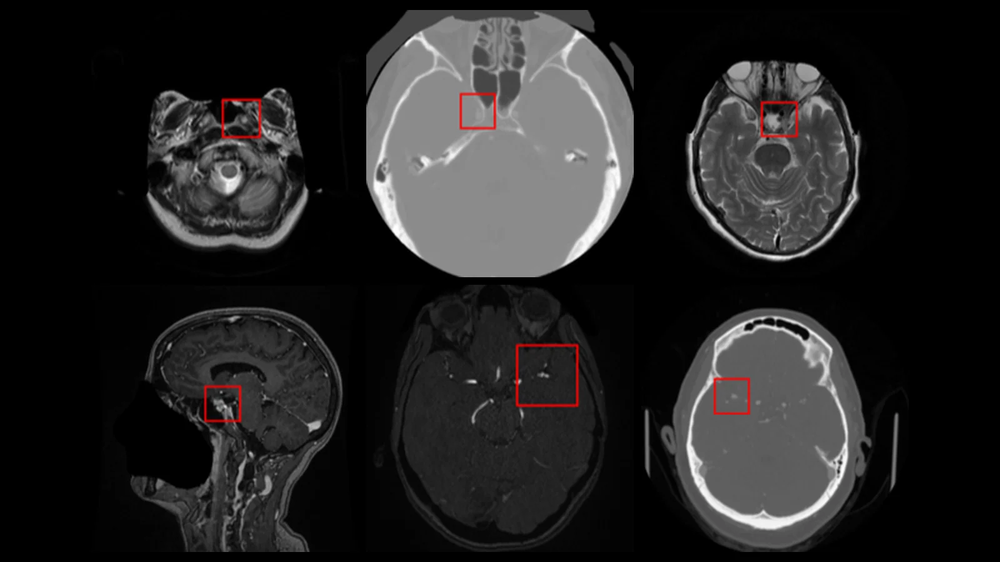
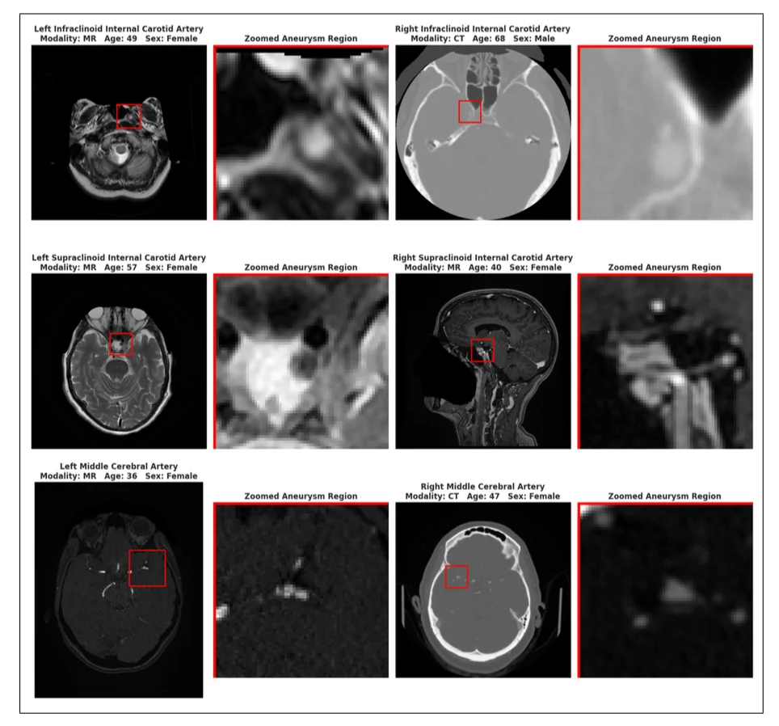

Aaron
AaronAI cho chẩn đoán hình ảnh tại VinBigData
VinBigData là đơn vị nghiên cứu và phát triển dữ liệu lớn và trí tuệ nhân tạo của Vingroup. Nhánh nghiên cứu AI kết hợp đào tạo chuyên sâu về thị giác máy tính, xử lý ngôn ngữ tự nhiên, AI tạo sinh và MLOps với các đề tài trên dữ liệu thật, trong đó y tế là một hướng trọng tâm.

Công bố

Đề tài phình động mạch nội sọ
Túi phình động mạch nội sọ nhỏ trên ảnh CTA, MRA hay MRI dễ bị bỏ sót, kể cả với bác sĩ có kinh nghiệm. Đề tài đề xuất một quy trình học sâu hai giai đoạn trên bộ dữ liệu RSNA Intracranial Aneurysm: phân vùng các vùng mạch máu nghi ngờ bằng 3D U-Net với độ nhạy cao, rồi phân loại từng khối 3D quanh vùng nghi ngờ để xác định túi phình và vị trí giải phẫu.

Bộ dữ liệu gồm ảnh CTA, MRA và MRI từ nhiều cơ sở, với vị trí túi phình được chuyên gia chẩn đoán hình ảnh chú thích theo 13 vị trí giải phẫu (Hình 1); sự đa dạng về phương thức ảnh là thách thức chính đối với mô hình.
Nghiên cứu do Phạm Thị Thảo Nguyên thực hiện chính; phần tôi là chấp bút, trình bày bối cảnh lâm sàng, quy trình và kết quả của nhóm thành một chương trong cuốn Intelligent Precision Healthcare của CRC Press.